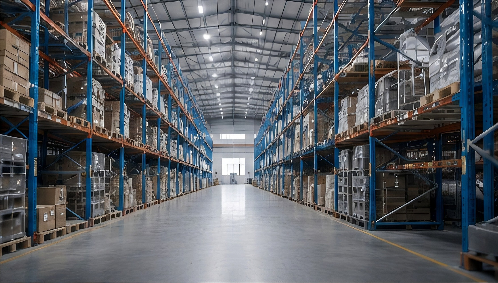

提升铝件外观、耐腐蚀与耐磨表现
阳极氧化适合铝合金外壳、支架、散热件和精密结构件。工艺前需要确认装夹位置、膜厚范围、颜色要求和关键尺寸补偿，避免膜层对配合尺寸、螺纹和导电区域产生影响。
本色阳极黑色阳极硬质阳极喷砂阳极局部遮蔽
耐腐蚀
★★★★封孔处理后适合大多数室内外应用环境。外观
多色支持本色、黑色、蓝色、红色等颜色评估。适配
铝件6061、6063、7075 等材料均可按效果评估。工艺参数
| 项目 | 常规阳极 | 硬质阳极 | 设计关注点 |
|---|---|---|---|
| 膜厚 | 5-25μm | 25-60μm | 配合面需预留膜厚补偿 |
| 颜色 | 本色 / 黑色 / 彩色 | 深灰 / 黑色为主 | 不同批次存在色差可能 |
| 表面前处理 | 喷砂 / 拉丝 / 抛光 | 喷砂为主 | 前处理决定最终纹理 |
| 遮蔽区域 | 螺纹 / 接地点 / 密封面 | 精密配合面 | 图纸需明确遮蔽要求 |
01图纸确认明确膜厚、颜色、遮蔽和外观等级。
02前处理喷砂、除油、清洗以保证表面一致性。
03氧化封孔完成成膜、染色与封孔稳定处理。
04外观检测检查色差、划伤、膜厚和关键尺寸。